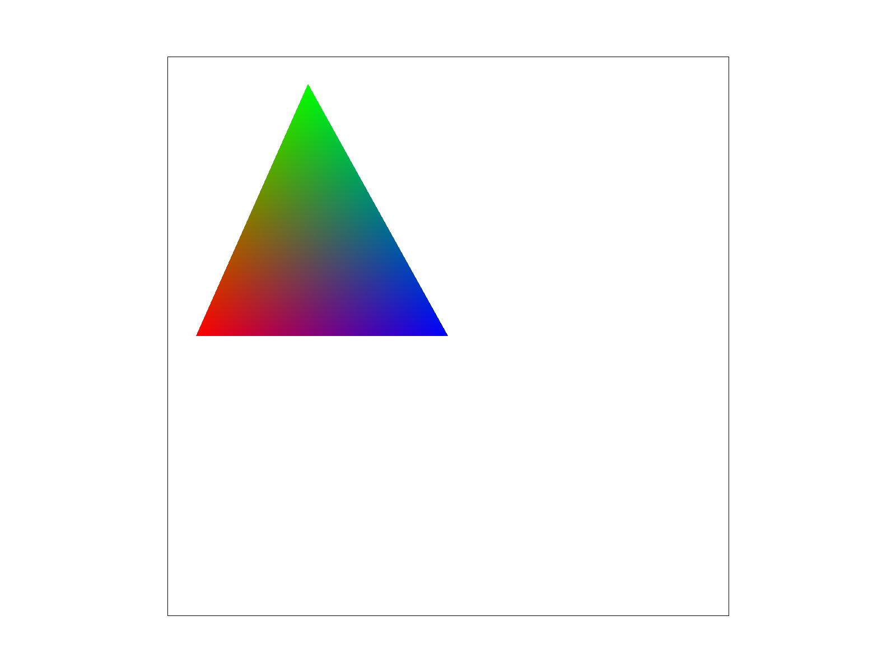

Overview
In this project, we implemented an image rasterizer from rasterizing triangles (the basic of rendering), supersampling, transforming, using Barycentric coordinates to linear interpolation, bilinear sampling and trilinear sampling.
Section I: Rasterization
Part 1: Rasterizing single-color triangles
Our central idea to rasterize triangles is three-line test.
A point is inside a triangle if and only if it is in the plane intersecting by the three half planes of the triangle.
Realizing that calculating L(x,y) is repetitive work, we created a helper function inside (to perform three-line test)
which calls sign (to perform line equation test).
However, one thing should be noted is the winding order of the vertices (i.e. clockwise or counter-clockwise). Therefore, a point is considered to inside a triangle
if the polarities of lines are ALL positive or ALL negative.
Our implementation is no worse than one that checks each sample within the bounding box of the triangle because we only check each pixel once within the bounding box defined by the minimum and maximum coordinates of the vertices.
|
Single color rendering (./draw ../svg/basic/test4.svg)
|
Part 2: Antialiasing triangles
After completing task 1, we noticed that there are jaggies on the edges of our rasterized triangles. This occurred because, for those pixels that are partially inside a triangle, each of them is either entirely on or entirely off depending on whether the central point of the pixel is inside the triangle, and there are no intermediate color values for these pixels.
In order to solve this issue of aliasing, we utilized the technique of supersampling. The high-level idea is that, for each pixel, instead of sampling it only once at its center point, we now do the sampling process more frequently, and when we resolve the image after sampling is done, we set the color of each pixel to be the average of the colors of all the subpixels that are sampled from it.
On a more detailed level, when we iterate over all the pixels on an image to conduct sampling, we added two more for-loops on the innermost, which would iterate over and sample at all the subpixels, row by row, inside of each single pixel. For example, for a pixel (x, y), if the given sampling rate is 4, then we would take samples at (x + 0.25, y + 0.25), (x + 0.75, y + 0.25), (x + 0.25, y + 0.75), and (x + 0.75, y + 0.75). All the sampled values are stored in the sample buffer. After the sampling process is done, we use the data stored in the sample buffer to fill the frame buffer. For each pixel, we set its color value (including red, green, and blue channels) to be the average color value of all the samples that are taken at its subpixels.
Supersampling is useful in antialiasing because, instead of leaving each pixel entirely on or off, it assigns an intermediate color value to each pixel. The intermediate color value is a good indication of what proportion of the pixel is inside the triangle, and it would therefore help smooth out the jaggies.
In this example shown below, as the sample rate increases from 1 to 4 and from 4 to 16, we can observe that the jaggies on the edge of the triangle looks more and more smooth. This is observed because, as we increase the sample rate, the intermediate color values given by supersampling would more accurately reflect what proportion of a pixel is inside the triangle. Therefore, the resulting image would look more and more similar to the original image, with the edges of the triangle more and more smooth.
|
1x sampling
|
4x sampling
|
16x sampling
|
Part 3: Transforms
We can transform our image in three ways: rotate, scale, and translate. By applying 3*3 transfomation matrices, we can perform a series of transformations from right to left. In robot.svg, the transformation structure is like a recursion. We chose our favorite colors and changed the color of the cubeman according to https://www.colorhexa.com/color-names. Then, we changed the angle of its head to be 0 degree. We also changed its size of hands to make it has hands with different positions. We also changed the size of feet. By doing so, we applied scaling, rotating, and translating.
|
Transformation (./draw ../svg/transforms/robot.svg)
|
Section II: Sampling
Part 4: Barycentric coordinates
Barycentric coordinates allow us to interpolate across triangles (texture coordinates, colors, normal vectors, etc.) As illustrated below (left), we assign the vertices of the triangle with green, red, blue colors. As illustrated in the right image, by calculating the barycentric coordinates (alpha, beta, and gamma), we can know the weights of each vertices.
|

Barycentric coordinate result illustration
|
"Pixel sampling" for texture mapping
|
The image below shows how narrow but long triangles with different colors on their vertices, together interpolate colors smoothly.
|
Color wheel: Barycentric coordinate result illustration (./draw ../svg/basic/test7.svg)
|
Part 5: "Pixel sampling" for texture mapping
Since screen coordinates are in (x, y) and texture coordinates are in (u, v), we first use Barycentric coordinates to find the corresponding points on texture map.
Then, there are two ways of sampling,
sample_nearest and
sample_bilinear.
sample_nearest is selecting the color of the nearest texel.
sample_bilinear is considering the four texels around our (u, v). We used the following formula to perform linear interpolation.
 Bilinear filtering illustration
Bilinear filtering illustration
|
As illustrated in the images below, comparing between the left ones and right ones, we can see that bilinear sampling can smooth the image (especially apparent for edges and white lines).
However, since bilinear sampling is taking four pixels and does more calculations, we need to weigh the smoothness with speed.
Comparing top ones with bottom ones, we can see that supersampling at 16x performs is way better than at 1x.
However, we can see that bilinear sampling at 16x does not have a significant improvement compared to nearest sampling at 16x.
So, we conclude that there will be a large difference between nearest sampling and bilinear sampling when sampling rate is small. This is because supersampling has already smoothed the image by filtering out high frequencies,
and adding bilinear sampling on top of that will not give us a visually improved image.
|
Nearest sampling at 1x.
|
Bilinear sampling at 1x.
|
|
Nearest sampling at 16x.
|
Bilinear sampling at 16x.
|
Part 6: "Level sampling" with mipmaps for texture mapping
When we conduct texture mapping, at different positions on the (x, y) screen space, one unit of change in the (x, y) space may correspond to different amount of change in the (u, v) texture space. Level sampling is integrated into texture mapping in order to further smooth the resulting image. For areas where one unit of change in the screen space corresponds to different amounts of change in the texture space, it uses mipmaps of different resolutions: if one unit of change in the screen space corresponds to a larger change in the texture space, then it means that more texels are contributing to a pixel footprint, so a mipmap of a lower resolution should be used in order to avoid aliasing; on the contrary, if one unit of change in the screen space corresponds to a smaller change in the texture space, then a mipmap of a higher resolution should be used in order to avoid blurring.
Mipmaps of different resolutions need to be stored in order to perform level sampling. As discussed in lectures and shown on the lecture slide below, when the number of level increases by 1, the resolutions on the width and height of the mipmap are divided by 2.
|
Different mipmap levels and their corresponding resolutions
|
To implement level sampling, we need to calculate the mipmap level at each pixel in the (x, y) screen space. In our implementation, we calculated the mipmap level D using the formula on the lecture slide shown below. du/dx, dv/dx, du/dy, and dv/dy represent the amount of change on the u and v axes in the texture space that corresponds to one unit of change on the x and y axes in the screen space. We then calculate the amount of total change in the texture space for one unit of change on the x axis and y axis, and assign the larger amount of change to L. Finally, we take the base-2 log of the larger change to get the mipmap level D.
 Formula for mipmap level calculation
Formula for mipmap level calculation
|
In our implementation, there are three different level sampling methods: sampling at level zero, nearest level, or bilinear level. Sampling at level zero is exactly what we did in task 5: for every pixel in the screen space, we used a mipmap of level zero, which has the highest resolution among all mipmaps. For sampling at nearest level, we round D to the nearest integer and use that as our sampling level. For sampling at bilinear level, we sample the colors at the two mipmap levels closest to D and interpolate them correspondingly to get the sampled color.
After the completion of task 6, we are able to select pixel sampling, level sampling, and the number of samples for each pixel. The images below are different versions of an image that utilize different sampling techniques. We can observe that, when we use sampling at level zero, switching from nearest sampling to bilinear sampling does not have an obvious improvement on the image, but when we use sampling at nearest level, changing from nearest sampling to bilinear sampling makes the image much smoother. In addition, when we switch from sampling at level zero to the nearest level, there is an obvious improvement on the smoothness of the image, for both the cases of nearest sampling and bilinear sampling.
|
L = zero, P = nearest
|
L = zero, P = linear
|
|
L = nearest, P = nearest
|
 L = nearest, P = linear
L = nearest, P = linear
|
There are tradeoffs between these three various sampling techniques, in terms of speed, memory usage, and antialiasing power.
As for the speed, supersampling is the slowest when the sample rate gets large. If the sample rate is N, then supersampling will make the process at least N times slower, since it needs to sample N subpixels in each pixel, and it takes extra time to calculate the average color and resolve to the frame buffer. Bilinear sampling requires 4 texel reads and 3 lerp function evaluations for every sample. Bilinear level sampling would double the number of texel reads and lerp function evaluation (plus one more lerp). Therefore, when N gets large, supersampling is way slower than the other two techniques.
As for the memory, bilinear level sampling needs extra memory space to store the mipmaps of different levels. From what was discussed in lecture, storing the mipmaps usually takes one third more memory space than only storing the original texture image, so the memory usage did not increase too much. For supersampling, when the sample rate gets large, the memory space that the sample buffer takes will become a lot more. If the sample rate is N, then the sample buffer will take N times more memory space, since it needs to store N color values for each pixel, instead of one. Bilinear sampling does not require extra memory space to store extra data.
As for the antialiasing power, from our observations in task 5, supersampling has the strongest antialiasing power: when we only change the sample rate from 1 to 16, the antialiasing effect is more obvious than when we keep the sample rate the same and only switch from nearest sampling to bilinear sampling.
Thus, when selecting between these three sampling techniques, we need to consider the speed-memory-antialiasing power tradeoffs.
Section III: Art Competition
If you are not participating in the optional art competition, don't worry about this section!
Part 7: Draw something interesting!